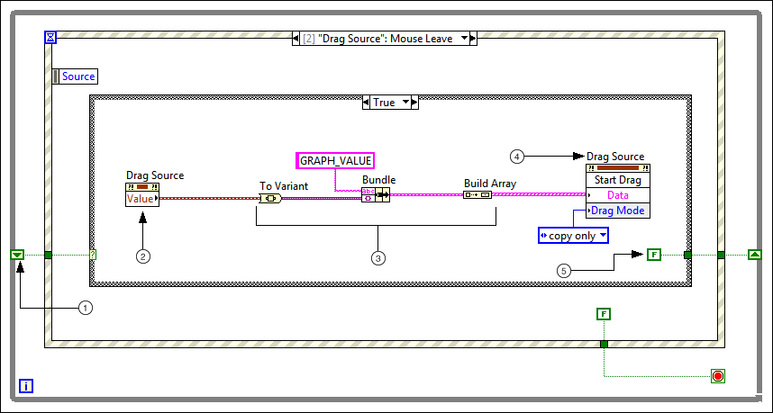

Step 4: Start the Drag-and-Drop Operation by Providing the Drag Data
To transfer data from the drag source to the drop target, you first must store the drag data when the user presses the mouse button and moves the cursor outside the bounds of the drag source. LabVIEW can retrieve the stored drag data later to update the drop target when the user causes the drop operation to occur.
What to Use
Use the following block diagram objects to start the drag by providing the drag data:
Create the following block diagram to start the drag by providing the drag data.

The following list describes important details about the previous block diagram.
The shift register indicates if the user has pressed the mouse button without releasing it. If the user presses the mouse button within the bounds of the drag source and does not release the button, the shift register value is TRUE. Start the drag by providing the drag data in the True case of the Case structure.
The Value property refers to the data value of the drag source.
Convert the data from the Property Node into a form that the Start Drag method can use. The Start Drag method requires drag data as a 1D array of clusters that consist of the variant data and a custom data name you choose.
Note When you choose custom data names, do not begin the data names with the prefix LV_. The LV_ prefix is reserved for built-in LabVIEW data types.
The Start Drag method stores the array of drag data you create and begins the drag-and-drop operation. To access the drag data at a later time, use the Get Drag Drop Data function.
Note This example implements copy only drag-and-drop behavior. To implement move behavior or move and copy behavior, change the Drag Mode parameter of the Start Drag method. You also must use the Drag Ended event to control when to clear data from the drag source.
The FALSE value returns the shift register to its original state. Provide a FALSE value to the shift register in the True and False cases. The FALSE constant is the only object in the False case of the Case structure, because the False case indicates an aborted drag-and-drop operation.

 Add
Add  Find
Find